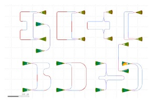
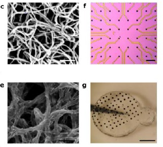
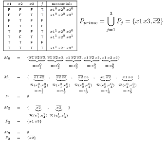

Unofficial Me! :) :)
People usually find me amiable and very easygoing. Frankly, I am interested in a variety of topics which includes any area of mathematics, number theory, physics, wireless networks, fractals, computational finance, robotics, artifical intelligence, feluda, tintin, byomkesh baksi, ritwik ghatak, satyajit ray, football, cricket, rosogolla,... the list can go on...and on...
MOOC Course Projects
Project:
Design of TE and TM Mode Mach-Zehnder Interferometer based on SOI Technology
Synopis:
The aim of the project was to present design and fabricate a simple Mach Zehnder Interferometer under both TE and TM-mode of operation based on SOI Technology. The simulated design was later compared with the experimental data of the fabricated MZI device to verify and compare both the simulated and practical result set. Data analysis on the experimental data was also carried out to extract important device parameters and also predict the performance of the fabricated MZI devices.
Duration:
Oct.'2015 - Nov.'2015
Download:
Project:
Photo-stimulation of Human Retinas Based on Semiconductor Nanorod-Carbon Nanotube Biomimetic Films
Synopsis:
The aim of the project was to present an idea to mimic the human vision i.e. Bionic Eyes with the aid of a nanosensor. A wire-free photo-reception approach was adopted. A novel structure for the retinal photo-stimulation, based on a combination of two nanomaterial systems ideally suited for neurostimulation: semiconductor nanorods (NRs) and carbon nanotubes (CNTs) was presented. The complete design paradigm along with the fabrication techniques adopted and the complete characterization of such complex optoelectronic systems was also given.
Duration:
Mar.' 2015 - Jun.' 2015
Download:
Project:
Computer Simulation Codes for the Quine McCluskey Method of Logic Minimization
Synopsis:
The Quine-McCluskey method is useful in minimizing logic expressions for larger number of variables when compared with minimization by Karnaugh Map or Boolean algebra. In this project, we have tried to put together all of the computer codes which are available on the internet, edited and modified them as well as rewritten some parts of those collected codes ourselves, which were used in the implementation of the Quine- McCluskey method. A brief introduction and the logic of this method were discussed following which the codes have been provided. The Quine-McCluskey Method was implemented using computer languages like C and C++ using some amount of variations. Our effort is to list them all, so that the readers well versed in any of the particular computer language will find it easy to follow the code written in that particular language.Duration:
Feb.' 2011 - Nov.' 2011
Download:
Social Media
Webcomics:
Pictures:
Warnock Engineering Building